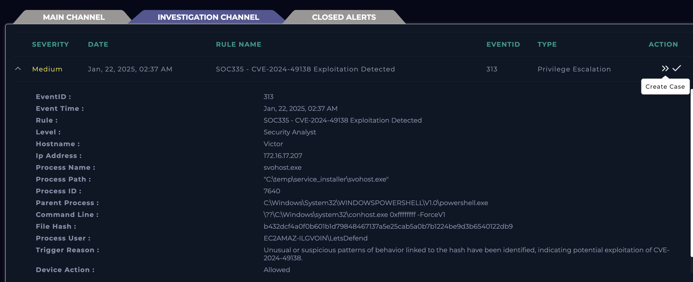
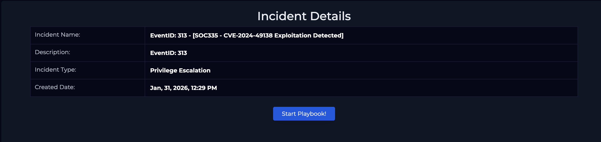
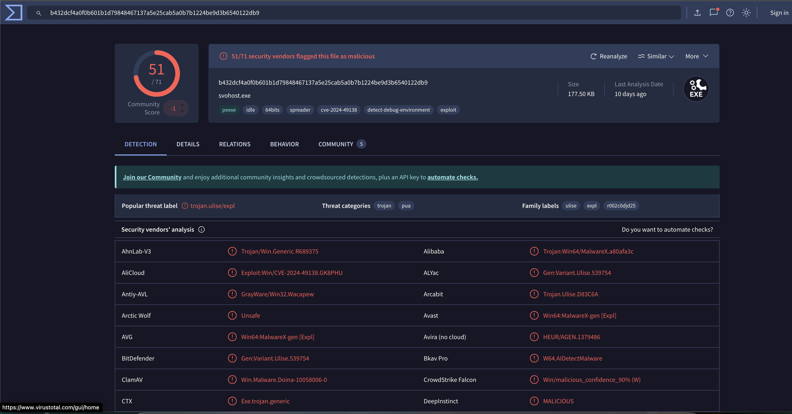
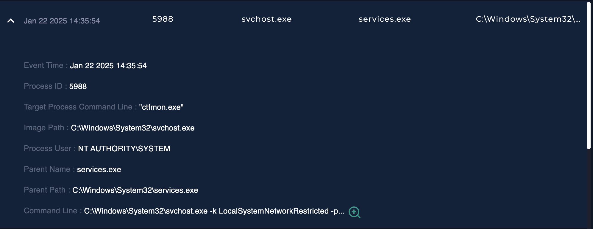
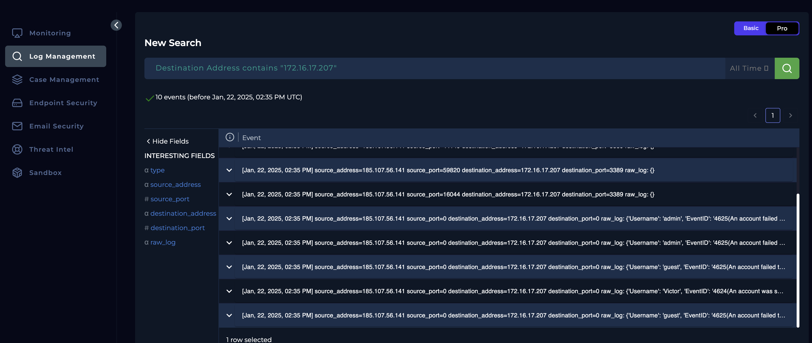
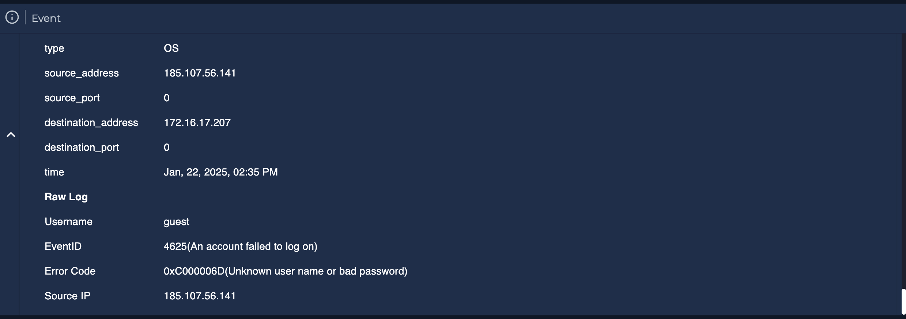
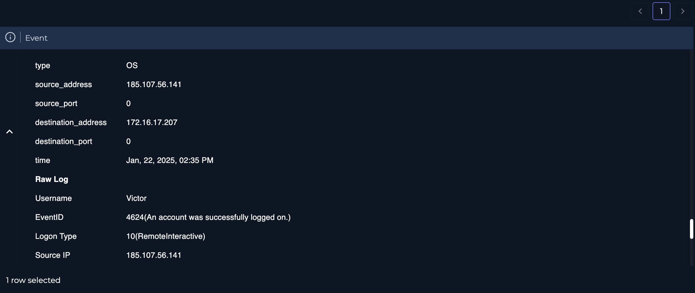
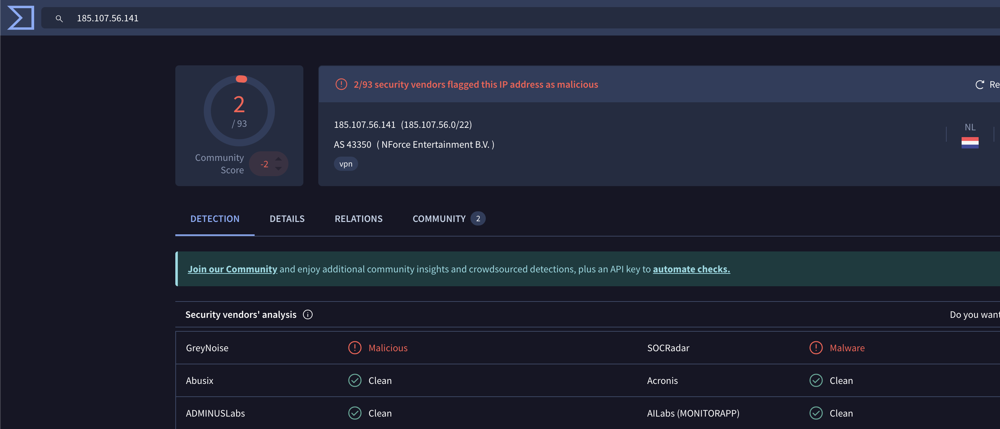
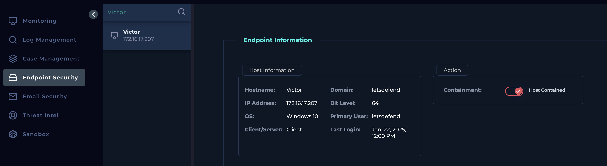

Objective
The goal of this investigation is to determine whether the SOC335 alert represents a genuine threat that requires further investigation
Investigation steps
Reviewed the high-level details of alert SOC335and took ownership of the case for further investigation to be carried out.
EventID: 313Event Time: Jan, 22, 2025, 02:37 AM
Rule: SOC335 - CVE-2024-49138 Exploitation Detected
The alert is transferred into the Investigation Channel, where I created the Case to follow playbook and mark whether this alert if a true or false positive.

Initiated the playbook to follow a structured procedure in investigating the alert

Carried out some background research based on the CVE the alert was corresponding to using NVD (National Vulnerability Database), where I was able to the understand the following:
CVE-2024-49138 is a high-severity Windows vulnerability that affects the Windows Common Log File System (CLFS) driver and allows an attacker with local access to escalate privileges to the SYSTEM level on affected machines.
Specifically, the flaw is a heap-based buffer overflow in the CLFS driver—a core component of Windows that handles system logging. When exploited, this weakness enables a low-privilege user or malicious process to manipulate how the driver processes log data, potentially triggering memory corruption that results in privilege escalation. Once elevated to SYSTEM, an attacker can gain full control of the system, install malware, disable security controls, or access sensitive data.
This vulnerability was publicly disclosed in December 2024, assigned a CVSSv3.1 base score of 7.8 (High), and has been confirmed to be actively exploited in the wild; it was added to the CISA Known Exploited Vulnerabilities Catalog, highlighting the need for rapid remediation.
Reviewed the hash in the alert in VirusTotal. The results appear that this hash has been identified as malicious by 51 security vendors.

Headed into the End point security module and reviewed the Host Victor. Looking at the Terminal History, a series of commands exexuted:
C:\Windows\System32\WindowsPowerShell\v1.0\powershell.exe - This indicates an interactive or scripted PowerShell session was started.
C:\Windows\system32\whoami.exe /priv – Used to explore what Windows privileges are enabled
C:\Windows\system32\whoami.exe - Verifying current user context and checking whether privilege escalation succeeded
The downloading of Payload hosted on AWS S3 and executed with a folder path of C:\temp\service_installer\svchost.exe.
Checked the Processes tab and could see the execution of the malicious payload under NT AUTHORITY\SYSTEM, indicating privilege escalation.

In the Log Management module, searched the IP address and results appeared of brute force attack where there are several instances of failed login attempts. After multiple attempts was this login successful from an IP of 185.107.56.141.



Ran VirusTotal against the IP address of 185.107.56.14, where 2 security vendors flagged this as malicious

As now I have confirmed the attack was successful, the affected device must be contained until disinfected to limit the impact of the security, protect data and operations, facilitate effective incident response, preserve evidence for forensic analysis, and ensure compliance with legal and regulatory requirements.

Analysis
The SOC335 alert was generated due to suspected exploitation of CVE-2024-49138 on host Victor (172.16.17.207). Initial review of the alert indicated unusual behavior associated with a known malicious hash, suggesting potential local privilege escalation activity. The alert was taken into ownership, transferred to the Investigation Channel, and handled in accordance with the SOC playbook to determine whether it represented a true or false positive.
Background research conducted using the National Vulnerability Database confirmed that CVE-2024-49138 is a high-severity vulnerability affecting the Windows Common Log File System (CLFS) driver. The vulnerability allows a locally authenticated attacker to exploit a heap-based buffer overflow to escalate privileges to NT AUTHORITY\SYSTEM. Given that the vulnerability is actively exploited in the wild and listed in the CISA Known Exploited Vulnerabilities Catalog, the alert posed a significant security concern.
Further analysis of the file hash associated with the alert using VirusTotal revealed that it was flagged as malicious by 51 security vendors, strongly indicating malware involvement. Endpoint telemetry from host Victor showed a sequence of suspicious command-line activity, beginning with the execution of PowerShell, followed by repeated use of whoami and whoami /priv. These commands are commonly used by attackers to enumerate privileges and confirm whether privilege escalation has been successful.
Subsequent commands revealed the download of a payload hosted on AWS S3, which was extracted and executed from the path C:\temp\service_installer\svchost.exe. The use of a masquerading binary name and a non-standard execution path further supports malicious intent. Review of the Processes tab confirmed that the payload was running under the NT AUTHORITY\SYSTEM context, validating that privilege escalation had been successfully achieved.
Additional investigation within the Log Management module identified multiple failed authentication attempts consistent with a brute-force attack, followed by a successful login originating from the external IP address 185.107.56.141. VirusTotal analysis of this IP address showed it to be flagged as malicious by multiple security vendors, strengthening the conclusion that the system compromise originated from external threat actor activity.
Based on the correlation of endpoint behaviour, confirmed malware execution, successful privilege escalation, and supporting threat intelligence, this alert has been classified as a true positive. The attack was successful and resulted in full system compromise, necessitating immediate containment of the affected device to prevent further damage, preserve forensic evidence, and enable remediation in line with incident response and regulatory requirements.
Key learnings
This investigation reinforced the importance of correlating threat intelligence, endpoint telemetry, and log data to accurately identify and validate active exploitation. The case demonstrated how local privilege escalation vulnerabilities such as CVE-2024-49138 can be leveraged post-compromise to obtain SYSTEM-level access, emphasizing the need to closely monitor privilege enumeration activity and unusual PowerShell usage. Analysis of command-line behaviour, process execution context, and external payload delivery highlighted how attackers verify exploit success and deploy malware using living-off-the-land techniques. Additionally, the presence of brute-force login attempts prior to successful authentication underscored the value of reviewing authentication logs to understand initial access vectors. Overall, this incident strengthened practical SOC skills in playbook-driven investigations, attacker behaviour analysis, and evidence-based decision-making for effective incident containment and response.
MITRE ATT&CK mapping
Mapping this investigation's confirmed activity to ATT&CK tactics and techniques, based on what was actually observed in the logs and endpoint telemetry above:
| Tactic | Technique | Observed in this investigation |
|---|---|---|
| Initial Access | T1110 Brute Force | Multiple failed authentication attempts followed by a successful login from an external, threat-flagged IP |
| Execution | T1059.001 PowerShell | PowerShell execution on host Victor following initial access |
| Discovery | T1033 System Owner/User Discovery | Repeated use of whoami and whoami /priv to enumerate privileges post-access |
| Command & Control | T1105 Ingress Tool Transfer | Payload downloaded and extracted from an AWS S3-hosted location |
| Defense Evasion | T1036 Masquerading | Malicious payload executed as svchost.exe from a non-standard path (C:\temp\service_installer\) |
| Privilege Escalation | T1068 Exploitation for Privilege Escalation | CVE-2024-49138 (Windows CLFS driver heap overflow) exploited to reach NT AUTHORITY\SYSTEM, confirmed via the Processes tab |